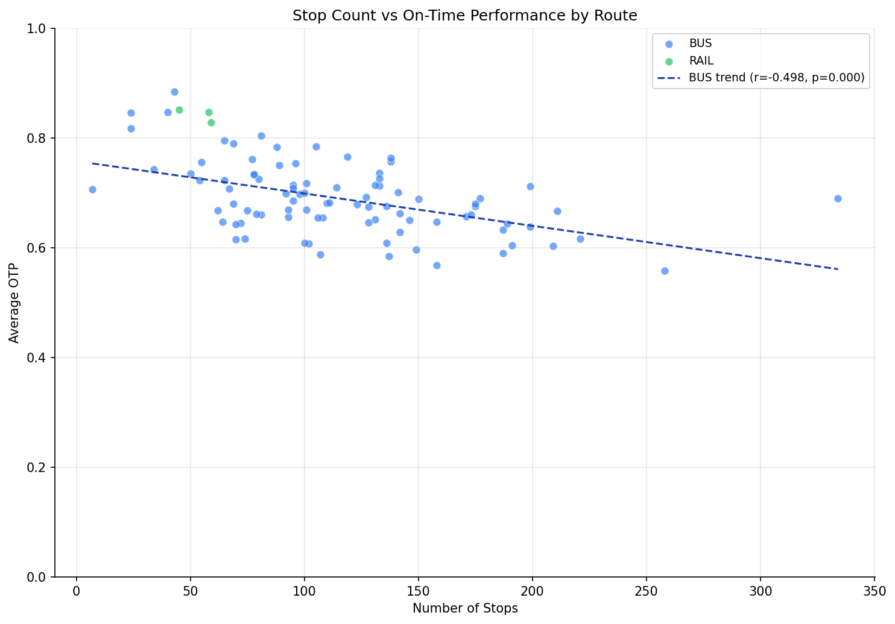

Analysis
07: Stop Count vs OTP
Core OTP Patterns
Coverage: 2019-01 to 2025-11 (from otp_monthly).
Built 2026-04-03 19:46 UTC · Commit 59585ac
Page Navigation
Analysis Navigation
Data Provenance
flowchart LR
07_stop_count_vs_otp(["07: Stop Count vs OTP"])
t_otp_monthly[("otp_monthly")] --> 07_stop_count_vs_otp
01_data_ingestion[["Data Ingestion"]] --> t_otp_monthly
u1_01_data_ingestion[/"data/routes_by_month.csv"/] --> 01_data_ingestion
u2_01_data_ingestion[/"data/PRT_Current_Routes_Full_System_de0e48fcbed24ebc8b0d933e47b56682.csv"/] --> 01_data_ingestion
u3_01_data_ingestion[/"data/Transit_stops_(current)_by_route_e040ee029227468ebf9d217402a82fa9.csv"/] --> 01_data_ingestion
u4_01_data_ingestion[/"data/PRT_Stop_Reference_Lookup_Table.csv"/] --> 01_data_ingestion
u5_01_data_ingestion[/"data/average-ridership/12bb84ed-397e-435c-8d1b-8ce543108698.csv"/] --> 01_data_ingestion
t_route_stops[("route_stops")] --> 07_stop_count_vs_otp
01_data_ingestion[["Data Ingestion"]] --> t_route_stops
t_routes[("routes")] --> 07_stop_count_vs_otp
01_data_ingestion[["Data Ingestion"]] --> t_routes
d1_07_stop_count_vs_otp(("polars (lib)")) --> 07_stop_count_vs_otp
d2_07_stop_count_vs_otp(("scipy (lib)")) --> 07_stop_count_vs_otp
classDef page fill:#dbeafe,stroke:#1d4ed8,color:#1e3a8a,stroke-width:2px;
classDef table fill:#ecfeff,stroke:#0e7490,color:#164e63;
classDef dep fill:#fff7ed,stroke:#c2410c,color:#7c2d12,stroke-dasharray: 4 2;
classDef file fill:#eef2ff,stroke:#6366f1,color:#3730a3;
classDef api fill:#f0fdf4,stroke:#16a34a,color:#14532d;
classDef pipeline fill:#f5f3ff,stroke:#7c3aed,color:#4c1d95;
class 07_stop_count_vs_otp page;
class t_otp_monthly,t_route_stops,t_routes table;
class d1_07_stop_count_vs_otp,d2_07_stop_count_vs_otp dep;
class u1_01_data_ingestion,u2_01_data_ingestion,u3_01_data_ingestion,u4_01_data_ingestion,u5_01_data_ingestion file;
class 01_data_ingestion pipeline;
Findings
Findings: Stop Count vs OTP
Summary
There is a moderately strong negative correlation between the number of stops on a route and its average OTP. This finding holds for both all routes and bus-only analysis, ruling out Simpson's paradox as a confounder.
Key Numbers
- All routes: Pearson r = -0.53 (p < 0.001, n = 92)
- Bus only: Pearson r = -0.50 (p < 0.001, n = 89)
- Bus only: Spearman r = -0.49 (p < 0.001)
- Routes with < 50 stops: typically 80%+ OTP
- Routes with 150+ stops: typically below 60% OTP
Routes with fewer than 12 months of OTP data are excluded to avoid noisy averages from sparse observations.
Observations
- The bus-only correlation (r = -0.50) is nearly as strong as the all-routes correlation (r = -0.53), confirming that the effect is not driven by the BUS/RAIL mode split (Simpson's paradox). Stop count predicts OTP within the bus mode alone.
- The Spearman rank correlation (r = -0.49) is consistent with the Pearson, indicating the relationship is approximately monotonic without being driven by outliers or non-linearity.
- Every stop adds dwell time (boarding/alighting), traffic signal delay, and schedule recovery risk. The cumulative effect is substantial.
- Busway and rail routes tend to have fewer stops and dedicated right-of-way, giving them a double advantage.
- Route 77 (Penn Hills) is an extreme case: 258 stops and among the worst OTP in the system.
Implication
Stop consolidation -- reducing the number of stops on long routes -- is a common transit strategy for improving schedule adherence. This data strongly supports that approach for PRT's worst-performing routes.
Caveats
- Correlation is not causation. Routes with many stops also tend to serve congested corridors, cover longer distances, and carry more passengers -- all of which independently affect OTP.
- Temporal mismatch: Stop counts come from the current
route_stopssnapshot while OTP is averaged across all historical months (2019--2025). Routes that changed stop configurations during this period have a mismatch between their current stop count and earlier OTP observations. This is inherent to the available data and cannot be corrected without historical stop-count snapshots.
Review History
- 2026-02-11: RED-TEAM-REPORTS/2026-02-11-analyses-01-05-07-11.md — 6 issues (0 significant). Added 12-month minimum filter, temporal mismatch note in METHODS.md,
all_ntracking, replaced manual regression withlinregress, added min-n guard, updated METHODS.md for Pearson+Spearman.
Output

scatter plot with regression line.
No interactive outputs declared.
per-route stop count and average OTP.
Preview CSV
Methods
Methods: Stop Count vs OTP
Question
Do routes with more stops have worse on-time performance? Each stop is another opportunity to fall behind schedule.
Approach
- Count distinct stops per route from
route_stops. - Compute average OTP per route from
otp_monthly, requiring at least 12 months of data (HAVING COUNT(*) >= 12) to exclude routes with sparse observations. - Create a scatter plot of stop count vs average OTP, colored by mode.
- Compute Pearson and Spearman correlation coefficients, both for all routes and for bus-only (to check for Simpson's paradox from mixing modes).
- Fit a simple linear regression line (bus-only, via
scipy.stats.linregress).
Note: Stop counts come from the current route_stops snapshot, while OTP is averaged across all historical months. Routes that changed stop configurations over time will have a mismatch between their current stop count and the OTP values from earlier periods.
Data
| Name | Description | Source |
|---|---|---|
otp_monthly |
Monthly OTP per route | prt.db table |
route_stops |
Stop count per route | prt.db table |
routes |
Mode classification | prt.db table |
Output
output/stop_count_otp.csv-- per-route stop count and average OTPoutput/stop_count_vs_otp.png-- scatter plot with regression line
Source Code
|
Sources
| Name | Type | Why It Matters | Owner | Freshness | Caveat |
|---|---|---|---|---|---|
| otp_monthly | table | Primary analytical table used in this page's computations. | Produced by Data Ingestion. | Updated when the producing pipeline step is rerun. | Coverage depends on upstream source availability and ETL assumptions. |
Upstream sources (5)
|
|||||
| route_stops | table | Primary analytical table used in this page's computations. | Produced by Data Ingestion. | Updated when the producing pipeline step is rerun. | Coverage depends on upstream source availability and ETL assumptions. |
Upstream sources (5)
|
|||||
| routes | table | Primary analytical table used in this page's computations. | Produced by Data Ingestion. | Updated when the producing pipeline step is rerun. | Coverage depends on upstream source availability and ETL assumptions. |
Upstream sources (5)
|
|||||
| polars | dependency | Runtime dependency required for this page's pipeline or analysis code. | Open-source Python ecosystem maintainers. | Version pinned by project environment until dependency updates are applied. | Library updates may change behavior or defaults. |
| scipy | dependency | Runtime dependency required for this page's pipeline or analysis code. | Open-source Python ecosystem maintainers. | Version pinned by project environment until dependency updates are applied. | Library updates may change behavior or defaults. |